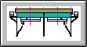
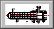
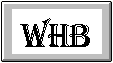
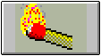
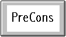
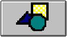

I pulsanti che si trovano sulla finestra iniziale consentono di accedere rapidamente alle applicazioni autonome del sistema Lancio, in alternativa all'accesso tramite il menu.

Per accedere alla Progettazione Aerorefrigeranti

Per accedere alla Progettazione S&T

Per accedere alla Progettazione dei Waste Heat Boilers

Per accedere alla Gestione Saldatura
Per accedere alla Gestione Progetti

Per accedere alla Consuntivazione e Programmazione dell'officina

Per accedere alle Utilità di disegnazione